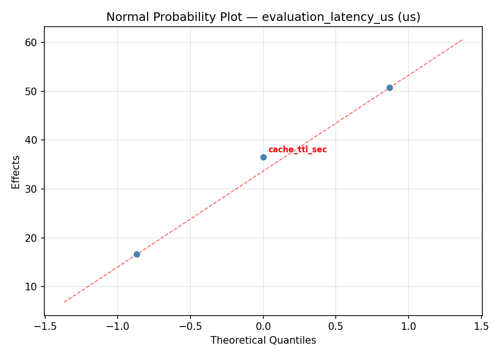
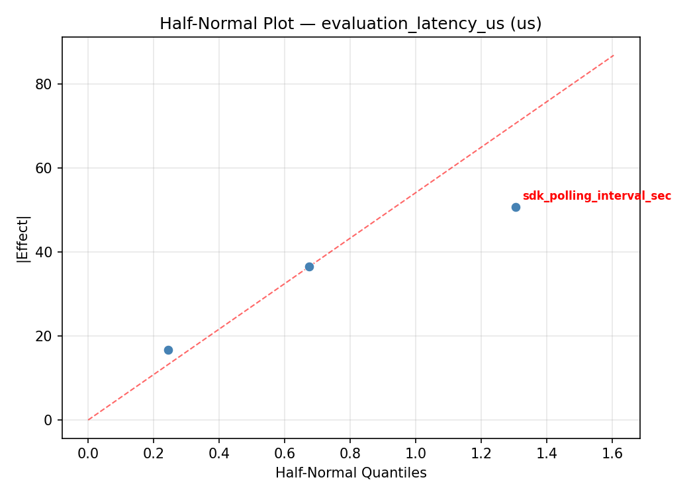
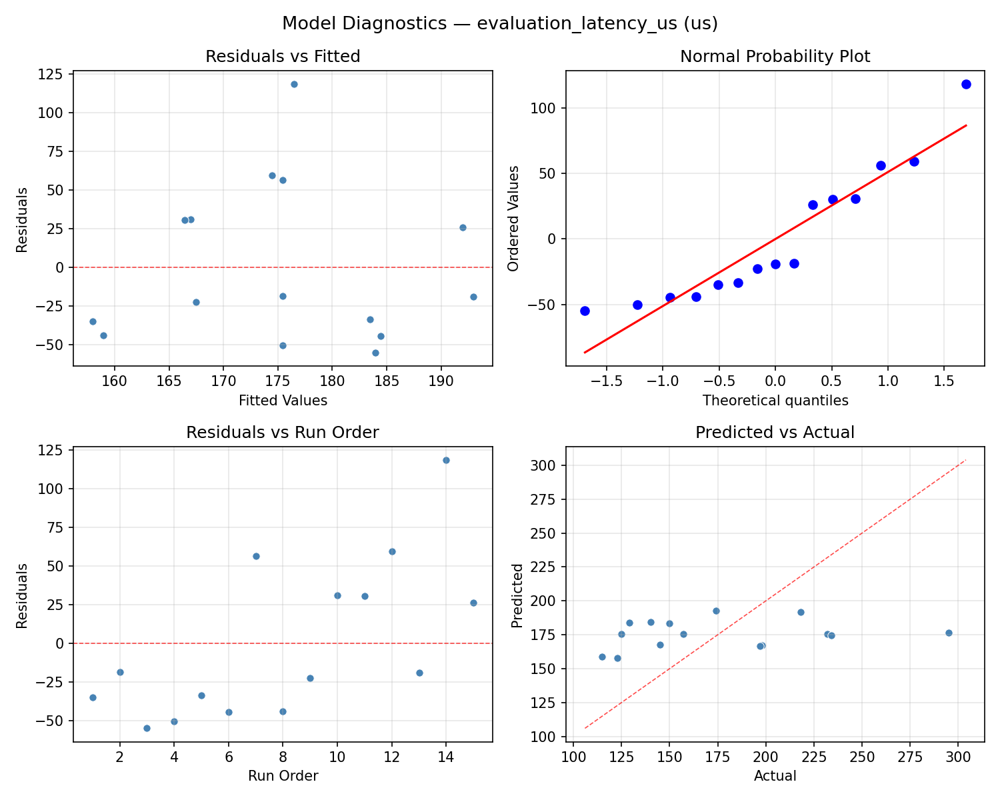
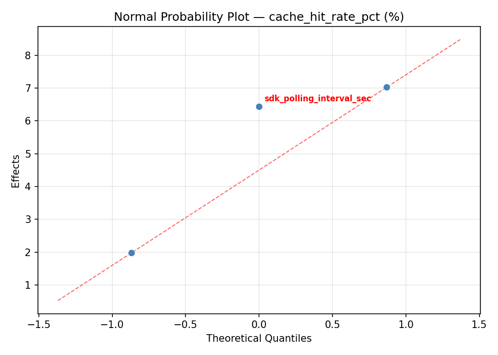
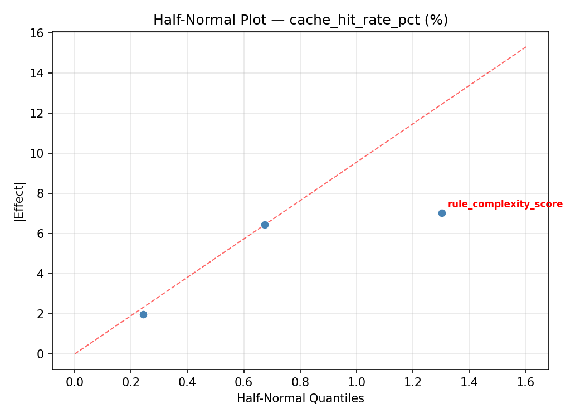
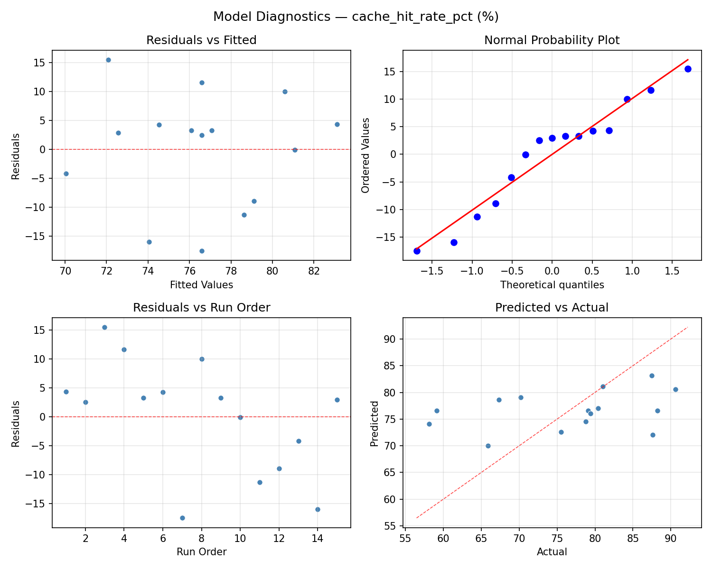

Summary
This experiment investigates feature flag evaluation. Box-Behnken design to tune cache TTL, rule complexity, and SDK polling interval for evaluation latency and cache hits.
The design varies 3 factors: cache ttl sec (sec), ranging from 5 to 120, rule complexity score (score), ranging from 1 to 10, and sdk polling interval sec (sec), ranging from 10 to 300. The goal is to optimize 2 responses: evaluation latency us (us) (minimize) and cache hit rate pct (%) (maximize). Fixed conditions held constant across all runs include platform = launchdarkly, sdk = server_side.
A Box-Behnken design was chosen because it efficiently fits quadratic models with 3 continuous factors while avoiding extreme corner combinations — requiring only 15 runs instead of the 8 needed for a full factorial at two levels.
Quadratic response surface models were fitted to capture potential curvature and factor interactions. The RSM contour plots below visualize how pairs of factors jointly affect each response.
Key Findings
For evaluation latency us, the most influential factors were rule complexity score (44.7%), sdk polling interval sec (30.1%), cache ttl sec (25.2%). The best observed value was 115.0 (at cache ttl sec = 120, rule complexity score = 10, sdk polling interval sec = 155).
For cache hit rate pct, the most influential factors were rule complexity score (38.4%), sdk polling interval sec (33.2%), cache ttl sec (28.4%). The best observed value was 90.6 (at cache ttl sec = 120, rule complexity score = 10, sdk polling interval sec = 155).
Recommended Next Steps
- Run confirmation experiments at the predicted optimal settings to validate the model.
- Consider whether any fixed factors should be varied in a future study.
Experimental Setup
Factors
| Factor | Low | High | Unit |
|---|
cache_ttl_sec | 5 | 120 | sec |
rule_complexity_score | 1 | 10 | score |
sdk_polling_interval_sec | 10 | 300 | sec |
Fixed: platform = launchdarkly, sdk = server_side
Responses
| Response | Direction | Unit |
|---|
evaluation_latency_us | ↓ minimize | us |
cache_hit_rate_pct | ↑ maximize | % |
Configuration
{
"metadata": {
"name": "Feature Flag Evaluation",
"description": "Box-Behnken design to tune cache TTL, rule complexity, and SDK polling interval for evaluation latency and cache hits"
},
"factors": [
{
"name": "cache_ttl_sec",
"levels": [
"5",
"120"
],
"type": "continuous",
"unit": "sec"
},
{
"name": "rule_complexity_score",
"levels": [
"1",
"10"
],
"type": "continuous",
"unit": "score"
},
{
"name": "sdk_polling_interval_sec",
"levels": [
"10",
"300"
],
"type": "continuous",
"unit": "sec"
}
],
"fixed_factors": {
"platform": "launchdarkly",
"sdk": "server_side"
},
"responses": [
{
"name": "evaluation_latency_us",
"optimize": "minimize",
"unit": "us"
},
{
"name": "cache_hit_rate_pct",
"optimize": "maximize",
"unit": "%"
}
],
"settings": {
"operation": "box_behnken",
"test_script": "use_cases/84_feature_flag_evaluation/sim.sh"
}
}
Experimental Matrix
The Box-Behnken Design produces 15 runs. Each row is one experiment with specific factor settings.
| Run | cache_ttl_sec | rule_complexity_score | sdk_polling_interval_sec |
|---|
| 1 | 62.5 | 1 | 10 |
| 2 | 62.5 | 5.5 | 155 |
| 3 | 120 | 5.5 | 300 |
| 4 | 120 | 5.5 | 10 |
| 5 | 62.5 | 5.5 | 155 |
| 6 | 62.5 | 5.5 | 155 |
| 7 | 5 | 5.5 | 300 |
| 8 | 120 | 1 | 155 |
| 9 | 62.5 | 1 | 300 |
| 10 | 120 | 10 | 155 |
| 11 | 5 | 5.5 | 10 |
| 12 | 62.5 | 10 | 300 |
| 13 | 5 | 1 | 155 |
| 14 | 5 | 10 | 155 |
| 15 | 62.5 | 10 | 10 |
Step-by-Step Workflow
1
Preview the design
$ python doe.py info --config use_cases/84_feature_flag_evaluation/config.json
2
Generate the runner script
$ python doe.py generate --config use_cases/84_feature_flag_evaluation/config.json \
--output use_cases/84_feature_flag_evaluation/results/run.sh --seed 42
3
Execute the experiments
$ bash use_cases/84_feature_flag_evaluation/results/run.sh
4
Analyze results
$ python doe.py analyze --config use_cases/84_feature_flag_evaluation/config.json
5
Get optimization recommendations
$ python doe.py optimize --config use_cases/84_feature_flag_evaluation/config.json
6
Multi-objective optimization
With 2 competing responses, use --multi to find the best compromise via Derringer–Suich desirability.
$ python doe.py optimize --config use_cases/84_feature_flag_evaluation/config.json --multi
7
Generate the HTML report
$ python doe.py report --config use_cases/84_feature_flag_evaluation/config.json \
--output use_cases/84_feature_flag_evaluation/results/report.html
Features Exercised
| Feature | Value |
|---|
| Design type | box_behnken |
| Factor types | continuous (all 3) |
| Arg style | double-dash |
| Responses | 2 (evaluation_latency_us ↓, cache_hit_rate_pct ↑) |
| Total runs | 15 |
Analysis Results
Generated from actual experiment runs using the DOE Helper Tool.
Response: evaluation_latency_us
Top factors: rule_complexity_score (44.7%), sdk_polling_interval_sec (30.1%), cache_ttl_sec (25.2%).
ANOVA
| Source | DF | SS | MS | F | p-value |
|---|
| Source | DF | SS | MS | F | p-value |
| cache_ttl_sec | 2 | 4903.1262 | 2451.5631 | 5.361 | 0.0333 |
| rule_complexity_score | 2 | 17663.9833 | 8831.9917 | 19.312 | 0.0009 |
| sdk_polling_interval_sec | 2 | 6255.0190 | 3127.5095 | 6.839 | 0.0186 |
| Lack | of | Fit | 6 | 8246.9381 | 1374.4897 |
| Pure | Error | 2 | 914.6667 | | |
| Error | 8 | 9161.6048 | 457.3333 | | |
| Total | 14 | 37983.7333 | 2713.1238 | | |
Pareto Chart

Main Effects Plot

Normal Probability Plot of Effects

Half-Normal Plot of Effects

Model Diagnostics

Response: cache_hit_rate_pct
Top factors: rule_complexity_score (38.4%), sdk_polling_interval_sec (33.2%), cache_ttl_sec (28.4%).
ANOVA
| Source | DF | SS | MS | F | p-value |
|---|
| Source | DF | SS | MS | F | p-value |
| cache_ttl_sec | 2 | 230.0894 | 115.0447 | 3.233 | 0.0935 |
| rule_complexity_score | 2 | 513.3119 | 256.6559 | 7.213 | 0.0162 |
| sdk_polling_interval_sec | 2 | 363.6879 | 181.8440 | 5.110 | 0.0372 |
| Lack | of | Fit | 6 | 336.4882 | 56.0814 |
| Pure | Error | 2 | 71.1667 | | |
| Error | 8 | 407.6549 | 35.5833 | | |
| Total | 14 | 1514.7440 | 108.1960 | | |
Pareto Chart

Main Effects Plot

Normal Probability Plot of Effects

Half-Normal Plot of Effects

Model Diagnostics

Response Surface Plots
3D surfaces fitted with quadratic RSM. Red dots are observed data points.
cache hit rate pct cache ttl sec vs rule complexity score

cache hit rate pct cache ttl sec vs sdk polling interval sec

cache hit rate pct rule complexity score vs sdk polling interval sec

evaluation latency us cache ttl sec vs rule complexity score

evaluation latency us cache ttl sec vs sdk polling interval sec

evaluation latency us rule complexity score vs sdk polling interval sec

Multi-Objective Optimization
When responses compete, Derringer–Suich desirability finds the best compromise.
Each response is scaled to a 0–1 desirability, then combined via a weighted geometric mean.
Overall Desirability
D = 0.9796
Per-Response Desirability
| Response | Weight | Desirability | Predicted | Dir |
|---|
evaluation_latency_us |
1.0 |
|
115.32 0.9529 115.32 us |
↓ |
cache_hit_rate_pct |
1.5 |
|
92.14 0.9978 92.14 % |
↑ |
Recommended Settings
| Factor | Value |
|---|
cache_ttl_sec | 120 sec |
rule_complexity_score | 2.8 score |
sdk_polling_interval_sec | 300 sec |
Source: from RSM model prediction
Trade-off Summary
Sacrifice = how much worse than single-objective best.
| Response | Predicted | Best Observed | Sacrifice |
|---|
cache_hit_rate_pct | 92.14 | 90.60 | -1.54 |
Top 3 Runs by Desirability
| Run | D | Factor Settings |
|---|
| #4 | 0.8940 | cache_ttl_sec=120, rule_complexity_score=5.5, sdk_polling_interval_sec=300 |
| #1 | 0.8861 | cache_ttl_sec=62.5, rule_complexity_score=10, sdk_polling_interval_sec=300 |
Model Quality
| Response | R² | Type |
|---|
cache_hit_rate_pct | 0.8056 | quadratic |
Full Multi-Objective Output
============================================================
MULTI-OBJECTIVE OPTIMIZATION
Method: Derringer-Suich Desirability Function
============================================================
Overall desirability: D = 0.9796
Response Weight Desirability Predicted Direction
---------------------------------------------------------------------
evaluation_latency_us 1.0 0.9529 115.32 us ↓
cache_hit_rate_pct 1.5 0.9978 92.14 % ↑
Recommended settings:
cache_ttl_sec = 120 sec
rule_complexity_score = 2.8 score
sdk_polling_interval_sec = 300 sec
(from RSM model prediction)
Trade-off summary:
evaluation_latency_us: 115.32 (best observed: 115.00, sacrifice: +0.32)
cache_hit_rate_pct: 92.14 (best observed: 90.60, sacrifice: -1.54)
Model quality:
evaluation_latency_us: R² = 0.3533 (linear)
cache_hit_rate_pct: R² = 0.8056 (quadratic)
Top 3 observed runs by overall desirability:
1. Run #8 (D=0.9545): cache_ttl_sec=120, rule_complexity_score=1, sdk_polling_interval_sec=155
2. Run #4 (D=0.8940): cache_ttl_sec=120, rule_complexity_score=5.5, sdk_polling_interval_sec=300
3. Run #1 (D=0.8861): cache_ttl_sec=62.5, rule_complexity_score=10, sdk_polling_interval_sec=300
Full Analysis Output
=== Main Effects: evaluation_latency_us ===
Factor Effect Std Error % Contribution
--------------------------------------------------------------
rule_complexity_score 73.5000 13.4490 44.7%
sdk_polling_interval_sec 49.5714 13.4490 30.1%
cache_ttl_sec 41.3929 13.4490 25.2%
=== ANOVA Table: evaluation_latency_us ===
Source DF SS MS F p-value
-----------------------------------------------------------------------------
cache_ttl_sec 2 4903.1262 2451.5631 5.361 0.0333
rule_complexity_score 2 17663.9833 8831.9917 19.312 0.0009
sdk_polling_interval_sec 2 6255.0190 3127.5095 6.839 0.0186
Lack of Fit 6 8246.9381 1374.4897 3.005 0.2706
Pure Error 2 914.6667 457.3333
Error 8 9161.6048 457.3333
Total 14 37983.7333 2713.1238
=== Summary Statistics: evaluation_latency_us ===
cache_ttl_sec:
Level N Mean Std Min Max
------------------------------------------------------------
120 4 152.7500 44.6197 123.0000 218.0000
5 4 165.5000 25.9422 140.0000 198.0000
62.5 7 194.1429 64.6643 115.0000 295.0000
rule_complexity_score:
Level N Mean Std Min Max
------------------------------------------------------------
1 4 212.5000 64.1171 140.0000 295.0000
10 4 202.2500 41.5883 145.0000 234.0000
5.5 7 139.0000 21.5948 115.0000 174.0000
sdk_polling_interval_sec:
Level N Mean Std Min Max
------------------------------------------------------------
10 4 175.5000 48.5146 123.0000 232.0000
155 7 157.4286 37.3758 115.0000 218.0000
300 4 207.0000 73.6795 125.0000 295.0000
=== Main Effects: cache_hit_rate_pct ===
Factor Effect Std Error % Contribution
--------------------------------------------------------------
rule_complexity_score 12.8321 2.6857 38.4%
sdk_polling_interval_sec 11.1143 2.6857 33.2%
cache_ttl_sec 9.5071 2.6857 28.4%
=== ANOVA Table: cache_hit_rate_pct ===
Source DF SS MS F p-value
-----------------------------------------------------------------------------
cache_ttl_sec 2 230.0894 115.0447 3.233 0.0935
rule_complexity_score 2 513.3119 256.6559 7.213 0.0162
sdk_polling_interval_sec 2 363.6879 181.8440 5.110 0.0372
Lack of Fit 6 336.4882 56.0814 1.576 0.4376
Pure Error 2 71.1667 35.5833
Error 8 407.6549 35.5833
Total 14 1514.7440 108.1960
=== Summary Statistics: cache_hit_rate_pct ===
cache_ttl_sec:
Level N Mean Std Min Max
------------------------------------------------------------
120 4 82.6500 6.2185 75.5000 88.2000
5 4 76.5250 7.1439 65.9000 81.0000
62.5 7 73.1429 13.0098 58.1000 90.6000
rule_complexity_score:
Level N Mean Std Min Max
------------------------------------------------------------
1 4 69.9250 9.2478 58.1000 78.8000
10 4 72.4250 10.0778 59.1000 81.0000
5.5 7 82.7571 8.5652 65.9000 90.6000
sdk_polling_interval_sec:
Level N Mean Std Min Max
------------------------------------------------------------
10 4 73.5750 12.7722 59.1000 87.5000
155 7 81.7143 5.3760 75.5000 90.6000
300 4 70.6000 12.7575 58.1000 88.2000
Optimization Recommendations
=== Optimization: evaluation_latency_us ===
Direction: minimize
Best observed run: #8
cache_ttl_sec = 120
rule_complexity_score = 10
sdk_polling_interval_sec = 155
Value: 115.0
RSM Model (linear, R² = 0.2817, Adj R² = 0.0857):
Coefficients:
intercept +175.4667
cache_ttl_sec -10.0000
rule_complexity_score -14.8750
sdk_polling_interval_sec -31.8750
RSM Model (quadratic, R² = 0.7880, Adj R² = 0.4063):
Coefficients:
intercept +177.6667
cache_ttl_sec -10.0000
rule_complexity_score -14.8750
sdk_polling_interval_sec -31.8750
cache_ttl_sec*rule_complexity_score +8.5000
cache_ttl_sec*sdk_polling_interval_sec +15.5000
rule_complexity_score*sdk_polling_interval_sec -35.2500
cache_ttl_sec^2 -47.7083
rule_complexity_score^2 +18.0417
sdk_polling_interval_sec^2 +25.5417
Curvature analysis:
cache_ttl_sec coef=-47.7083 concave (has a maximum)
sdk_polling_interval_sec coef=+25.5417 convex (has a minimum)
rule_complexity_score coef=+18.0417 convex (has a minimum)
Notable interactions:
rule_complexity_score*sdk_polling_interval_sec coef=-35.2500 (antagonistic)
cache_ttl_sec*sdk_polling_interval_sec coef=+15.5000 (synergistic)
cache_ttl_sec*rule_complexity_score coef=+8.5000 (synergistic)
Predicted optimum (from quadratic model, at observed points):
cache_ttl_sec = 62.5
rule_complexity_score = 10
sdk_polling_interval_sec = 10
Predicted value: 273.5000
Surface optimum (via L-BFGS-B, quadratic model):
cache_ttl_sec = 5
rule_complexity_score = 10
sdk_polling_interval_sec = 300
Predicted value: 77.5417
Model quality: Good fit — general trends are captured, some noise remains.
Factor importance:
1. sdk_polling_interval_sec (effect: 63.8, contribution: 40.1%)
2. cache_ttl_sec (effect: 60.8, contribution: 38.2%)
3. rule_complexity_score (effect: 34.5, contribution: 21.7%)
=== Optimization: cache_hit_rate_pct ===
Direction: maximize
Best observed run: #8
cache_ttl_sec = 120
rule_complexity_score = 10
sdk_polling_interval_sec = 155
Value: 90.6
RSM Model (linear, R² = 0.3070, Adj R² = 0.1180):
Coefficients:
intercept +76.5800
cache_ttl_sec +0.7625
rule_complexity_score +2.3875
sdk_polling_interval_sec +7.2000
RSM Model (quadratic, R² = 0.7750, Adj R² = 0.3699):
Coefficients:
intercept +74.7667
cache_ttl_sec +0.7625
rule_complexity_score +2.3875
sdk_polling_interval_sec +7.2000
cache_ttl_sec*rule_complexity_score +0.9000
cache_ttl_sec*sdk_polling_interval_sec -4.9750
rule_complexity_score*sdk_polling_interval_sec +1.0750
cache_ttl_sec^2 +10.2917
rule_complexity_score^2 -0.1583
sdk_polling_interval_sec^2 -6.7333
Curvature analysis:
cache_ttl_sec coef=+10.2917 convex (has a minimum)
sdk_polling_interval_sec coef=-6.7333 concave (has a maximum)
rule_complexity_score coef=-0.1583 concave (has a maximum)
Notable interactions:
cache_ttl_sec*sdk_polling_interval_sec coef=-4.9750 (antagonistic)
rule_complexity_score*sdk_polling_interval_sec coef=+1.0750 (synergistic)
cache_ttl_sec*rule_complexity_score coef=+0.9000 (synergistic)
Predicted optimum (from quadratic model, at observed points):
cache_ttl_sec = 5
rule_complexity_score = 5.5
sdk_polling_interval_sec = 300
Predicted value: 89.7375
Surface optimum (via L-BFGS-B, quadratic model):
cache_ttl_sec = 5
rule_complexity_score = 10
sdk_polling_interval_sec = 297.667
Predicted value: 92.1434
Model quality: Good fit — general trends are captured, some noise remains.
Factor importance:
1. sdk_polling_interval_sec (effect: 14.7, contribution: 47.3%)
2. cache_ttl_sec (effect: 11.5, contribution: 37.3%)
3. rule_complexity_score (effect: 4.8, contribution: 15.4%)